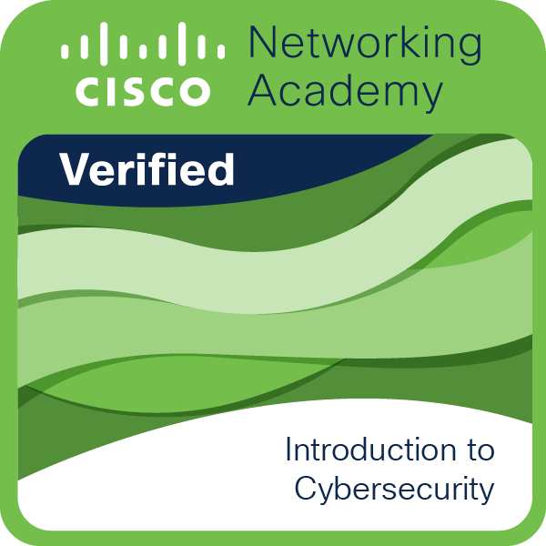
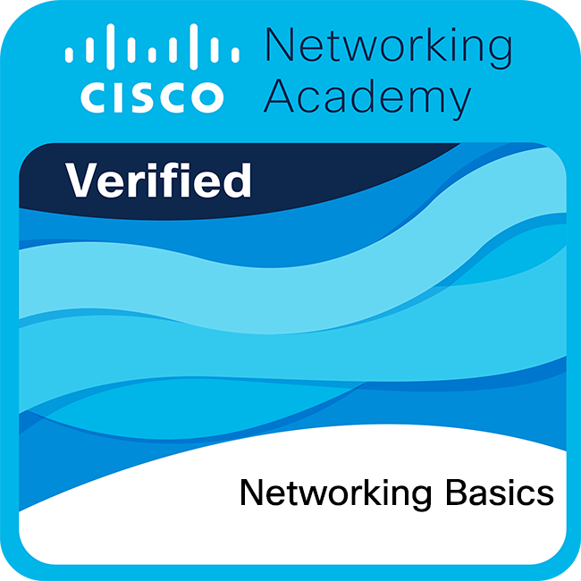
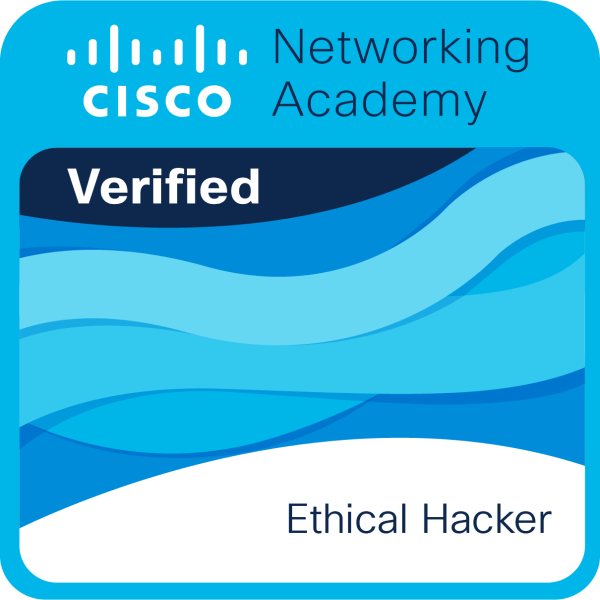

Periodo: Enero – Junio 2026 · PD05 · Reflexión profesional
Certificaciones Profesionales · Ciberseguridad
📘 Introducción a la Ciberseguridad

🌟 Reflexión: Este primer acercamiento no fue simplemente un curso introductorio, sino un verdadero punto de inflexión en mi visión tecnológica. El proceso de formación me permitió dimensionar el ecosistema digital desde una óptica completamente nueva: la seguridad no es un eslabón final, sino el cimiento sobre el cual debe construirse cualquier infraestructura. Mi mayor desafío fue precisamente asimilar ese cambio de paradigma, transitando de una mentalidad puramente operativa a una orientada a la mitigación proactiva de riesgos. De cara a mi futura inserción en el ámbito corporativo, este conocimiento representa una ventaja competitiva invaluable. Me da una perspectiva crítica y madura para comprender el verdadero impacto de las políticas empresariales que rigen a las organizaciones. A nivel personal, esta certificación encendió mi vocación de manera definitiva. Me dio la certeza de que mi camino profesional está en la ciberseguridad, inyectándome la motivación necesaria para enfrentar con disciplina y perseverancia los retos técnicos más complejos. Comprendí que proteger datos es salvaguardar la confianza de una organización; saber que me preparo para ser parte estratégica de esa línea de defensa es el motor que impulsa mi carrera.
🌐 Conceptos básicos de redes

📡 Reflexión: Comprender la anatomía de las telecomunicaciones es un requisito innegociable para cualquier ingeniera, y este módulo fue un desafío intelectual sumamente estimulante. El proceso formativo fue denso y riguroso, exigiendo un alto nivel de concentración para dominar arquitecturas fundamentales como el modelo OSI y la pila TCP/IP. El mayor reto radicó en materializar conceptos teóricos y abstractos, logrando mapearlos mentalmente en flujos de comunicación lógicos y funcionales. Superar esta barrera me dio una capacidad de análisis estructural formidable. Pensando en mi proyección profesional, dominar las redes representa un diferencial estratégico enorme. Me prepara para integrarme a equipos de alto rendimiento con la capacidad de diagnosticar fallos de conectividad desde su raíz, entendiendo el flujo de los datos antes de que lleguen a la capa de aplicación. Personalmente, este módulo fue una revelación gratificante. Desmitificar la magia detrás de la conectividad y comprender la intrincada ingeniería invisible que mantiene a nuestro mundo operando sin descanso, reforzó mi compromiso con la excelencia técnica. Saber cómo viaja cada paquete de información me da la confianza de que, al enfrentarme a infraestructuras reales, aplicaré ingeniería pura.
⚙️ Dispositivos de red y configuración inicial
🛠️ Reflexión: Transicionar de los diagramas teóricos a la consola de comandos fue, indiscutiblemente, una de las etapas más electrizantes de mi preparación. Este curso me sumergió en la ejecución técnica directa, exigiéndome interactuar con la interfaz de línea de comandos (CLI) de Cisco para inicializar, configurar y asegurar routers y switches. El desafío central fue lograr la precisión milimétrica de la sintaxis y desarrollar la destreza para implementar configuraciones robustas sin quebrar la topología de la red durante las simulaciones. En el panorama competitivo laboral, estas habilidades prácticas son mi mejor carta de presentación. Me dan la base técnica necesaria para, en un futuro cercano, intervenir en infraestructuras de hardware asegurando que los dispositivos operen con los más altos estándares de rendimiento y seguridad. A nivel personal, la experiencia de levantar una red desde cero me inyectó una profunda confianza. Validó mi capacidad de operar bajo presión en entornos prácticos y me demostró que estoy lista para pasar de la teoría a la acción real, consolidando una carrera donde la ejecución precisa será mi pan de cada día.
🖥️ Seguridad en terminales
🛡️ Reflexión: En la arquitectura de seguridad moderna, el usuario y su dispositivo final representan el perímetro más expuesto, y este curso fue una clase magistral sobre cómo blindar esa frontera crítica. Durante la formación, mi mayor desafío analítico consistió en comprender cómo orquestar controles estrictos —como el cifrado avanzado, la gestión de accesos y la mitigación de malware— sin asfixiar la productividad operativa del usuario final. Encontrar ese delicado equilibrio entre seguridad y usabilidad es un arte. De cara a mi inminente incursión en el sector corporativo, dominar estos principios me posiciona estratégicamente. Me da el criterio necesario para diseñar o auditar políticas que realmente protejan los activos de TI bajo enfoques de defensa en profundidad. En un plano más personal, esta certificación transformó radicalmente mi propia higiene digital. Me volvió hiperconsciente de las vulnerabilidades latentes en la cotidianidad, permitiéndome consolidar una disciplina preventiva que me forma como una ingeniera mucho más cautelosa. Entender que un solo equipo comprometido puede derribar a una organización me deja un sentido de responsabilidad inmenso.
🛡️ Administración de amenazas cibernéticas
🎯 Reflexión: Este módulo representó mi inmersión total en la faceta más investigativa de la ciberseguridad: la caza activa de amenazas. El proceso formativo me llevó al límite al enfrentarme al monitoreo continuo, el escrutinio de tráfico y la detección de anomalías en tiempo real. El reto supremo fue domesticar el caos de los datos; aprender a procesar volúmenes masivos de registros y desarrollar el instinto técnico indispensable para separar el ruido de los falsos positivos frente a incidentes legítimos. A nivel de proyección profesional, cultivar esta agudeza investigativa es un diferenciador espectacular. Me aporta bases metodológicas muy sólidas para integrarme exitosamente en equipos de respuesta a incidentes, aportando valor analítico desde el primer día. Personalmente, este curso me fascinó. Reafirmó mi afinidad por el análisis de datos complejos y me demostró que poseo la paciencia, la curiosidad y el rigor que exige la ciberdefensa. Sentir esa adrenalina al rastrear una vulnerabilidad oculta entre miles de líneas de código es inigualable; es el reto intelectual exacto que busco para mi futuro profesional.
🚀 Carrera Profesional de Analista Junior
🎯 Reflexión: Considero esta certificación como mi verdadera prueba de fuego; la culminación que integró todo mi arsenal técnico. Fue un entrenamiento exhaustivo diseñado para simular el rigor, la presión y el dinamismo implacable de un Centro de Operaciones de Seguridad (SOC). Mi mayor reto fue desarrollar la frialdad analítica para orquestar respuestas metodológicas ante escenarios de incidentes simultáneos, priorizando la criticidad mientras gestionaba el estrés eficientemente. Pensando en mi salto al mercado laboral, el peso de esta credencial es invaluable. Me aporta una madurez estructural excepcional, preparándome para abordar la seguridad alineada con marcos normativos rigurosos, garantizando la correcta gestión integral de riesgos. A nivel personal, este logro representa un hito fundamental en mi trayectoria. Es el resultado de mis años de formación y me da la certeza absoluta de que poseo las competencias, la ética profesional y la resiliencia necesarias para asumir responsabilidades de alto calibre. Me siento lista para proteger los activos de información más sensibles, consolidando mi perfil como una analista competitiva, estructurada e implacable.
⚡ Hacker ético

🎯 Reflexión: Cerrar mi ciclo formativo con esta certificación fue la experiencia más disruptiva y reveladora de todo mi proceso. Exigió una reestructuración completa de mi lógica: tuve que adoptar la mente del atacante para poder diseñar defensas verdaderamente sólidas. El desafío técnico fue monumental; requirió dominar herramientas avanzadas de penetración y ejecutar la explotación de vulnerabilidades de manera ética, quirúrgica y controlada, asegurando intacta la continuidad de los servicios. En la construcción de mi perfil profesional, poseer esta visión ofensiva me da una ventaja competitiva excepcional. Me prepara para anticipar movimientos adversarios, comprender la anatomía de campañas sofisticadas de intrusión y proponer arquitecturas de red inherentemente resilientes. A nivel personal, este curso fue, sin duda, la joya de la corona. Rompió mis esquemas tradicionales, consolidó mi vocación por la seguridad informática y me inyectó una pasión desbordante por esta industria. Saber que tengo las bases teóricas y prácticas para auditar, poner a prueba y asegurar sistemas complejos me deja plenamente entusiasmada y ferozmente preparada para conquistar los retos del mundo tecnológico real.